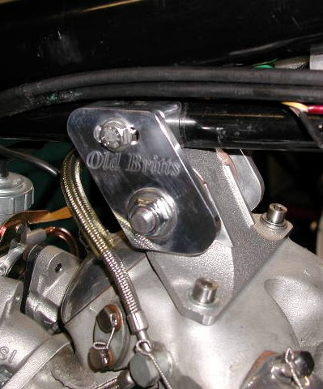
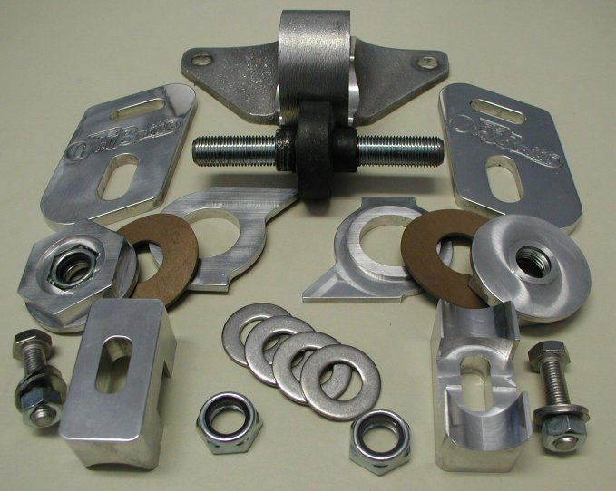
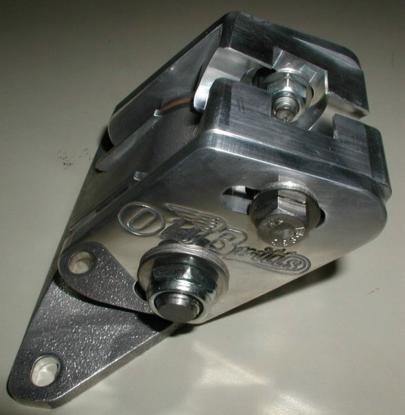
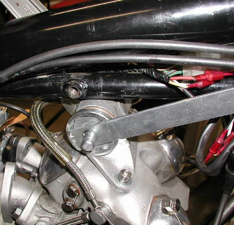
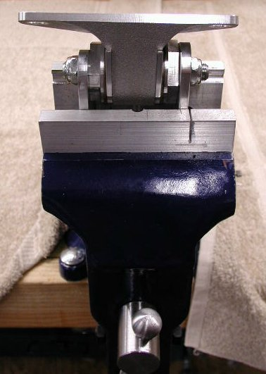

The isolastic bushing has a 1/2 x 20 Heli Coil insert the full length and the stud is bonded to the bushing by using 271 Loctite. This makes the bushing, stud and vernier adjustment plates one piece and eliminated the slight buzzing in the bars that was experienced with our first head steadies. If you purchased one of the first head steadies and we did not get a hold of you, please contact us for your free upgrade. The bushing and stud assembly is pressed into the body and there is a PTFE washer between the inner and middle side plates. The middle side plates have Nylon lock nuts pressed into them providing the vernier adjustment. The middle side plates are adjusted with the same size wrench (1 1/2") that you use to remove your crank case sump plug. We modified and use the Sump Plug Wrench (part # 70-0500031) DROPPED, to assemble our head steadies. A picture of the modified sump wrench is shown in Step 4 of the installation instructions. The modifications we made to this wrench were to drill a 1/2" hole in the center bar, so the stud would pass through, and ground off a bit from the sides.

- 0B-4179/A, Body Casting, Qty. 1
- OB-4179/BL,Inner Plate, Left (fits into the left side of the casting), Qty. 1
- OB-4179/BR, Inner Plate, Right (fits into the right side of the casting), Qty. 1
- OB-4179/C, Middle Plate (the 1 1/2" hex plate with the lock nut pressed into it), Qty. 2
- OB-4179/DL, Outer Plate, Left (with the Old Britts logo), Qty. 1
- OB-4179/DR, Outer Plate, Right (with the Old Britts logo), Qty. 1
- OB-4179/E, Frame Spacer (the 2" x 1" spacer), Qty. 2
- OB-4179/F, PTFE Washer, Qty. 2
- * OB-4179/G, 1/2" x 20, 4” Stud, Qty. 1
- * OB-4179/H, Rubber Bushing, 1/2 X 20 Threaded, Qty. 1
- 52-400001, 1/2" x 20, Lock Nut, Qty. 4
- 00-0008/SS, 1/2” Stainless Steel Washer, Qty. 4
- 52-110104, 5/16" x 24, 1 1/4" Stainless Steel Bolt, Qty. 2
- 52-330301, 5/16" Stainless Steel Washer, Qty. 4
* OB-4179/G (stud) and OB-4179/H (bushing), not sold separately.
The Commando rubber mounted engine (Isolastic mounting system) was designed to isolate the engine vibrations from the frame and the rider. For rigidity there are three mounts in a triangular pattern. Since the engine is mainly going to vibrate in an up-and-down motion, the swinging arm and rear wheel were rigidly mounted to the engine. The rear wheel is designed to move up and down so letting the engine vibrations directly transmit to the rear wheel did not affect the handling of the Commando. Any sideways movement of the engine is also transmitted to the rear wheel and does impact the handling. In fact this movement is multiplied due to the distance from the engine to the rear wheel. The front and rear isolastic mounts are designed to allow for up and down movement while minimizing the sideways movement. The stock top isolastic mount (head steady) seemed to be an afterthought, since it allows for movement in all directions. I guess it was assumed that the front and rear mounts would provide enough stability in the sideways directions. In fact the stock head steady does a good job for highway driving, and most touring, but starts rearing its ugly head when you start to get slightly aggressive or down right racy, allowing the rear wheel to move away from the frame’s center line and having a detrimental affect on the handling. Even the weekend conservative rider can benefit from an improved head steady for the occasional situation when quick steering is important, like avoiding a dog or something falling from the truck in front of you.
Just like good condition, softer rubber tires are cheap insurance, so is keeping your bike’s handling as good as possible. This is why I do not recommend the factory settings for the isolastics. I like to set mine at around .001” or as tight as I can get them and still allow for some up and down movement. Yes, this will transmit a bit more vibrations to the rider, but not nearly as much as the Atlas or other ridged mounted vertical twins.

Step 1: When you receive the head steady, remove the two 5/16 nuts and washers on the inside of the frame spacers. These two nuts are not used to mount the head steady, but you will use the two 5/16" stainless steel washers in Step 4.
Step 2: Remove the two lock nuts from the stud and the outer plates.
Step 3: For Commandos with the center stand mounted to the engine mounts, take your bike off the center stand and prop it up by using the side stand or something under the frame rails. For earlier Commandos that have the center stand mounted to the frame, you can leave the bike on the the center stand. As with adjusting your other isolastic mounts, you want the engine in a neutral position, not supporting the weight of the bike. Remove your old head steady saving your head steady screws and washers. We do stock replacement stainless steel screws (part # 06-7745/SS) $5.45 each, and replacement stainless steel, 5/16" internal toothed lock washers (part # 01-4117/SS) $0.28 each.

Step 5: Adjust the assembly to your desired spacing. When we assemble the head steady, we apply teflon lubricant between the PTFE washer and the inner and middle plates. This allows for more slippery surfaces and longer life of the PTFE washers. We also polish the sides of the inner and middle plates that press against the PTFE washer. When assembling, we tighten up the middle plates until we cannot rotate the middle plates by hand, then we back the middle plates to where we just get rotation. It is at this point that you can start to check for your desired clearance.
We have found that you will need to tighten the outer plates against the middle plates before you can accurately set your desired clearance. You do this by setting the initial clearance at around .025" to .030". Complete the assembly as described in steps 6 and 10. Tighten the two 1/2" lock nuts to around 30 ft/lb torque, then remove the two outer plates and set your final clearance. By setting a very loose clearance and torquing the end nuts, the head steady settles into its final position.

Step 6: Assemble the outer plates. Put one 1/2" washer in each of the indents of the middle plate. Put the outer plates in place and install one 1/2" washer over the stud, then thread the 1/2" lock nut by hand until it stops turning when the nylon insert is met.
Step 7: Insert the frame spacers between the top of the outer plate and the frame lugs. With the outer plate loose, you should be able to slide the spacer in from the front. Put the 5/16" washer on the 5/16" bolt and thread into the frame lug. Tighten this bolt just so it holds everything in place.
Step 8: Loosen the head screws that hold the head steady to the head a couple of turns so the head steady can freely move from side to side.
Step 9: Position the outer plates where you want them and torque the two 5/16" bolts to 15 ft/lb.
Step 10: Tighten one of the 1/2" lock nuts on the stud until it is holding the outer plate firmly making sure that the two middle plates do not turn. Normally one nut seems to thread easier than the other, so you can hold the harder to thread nut with a wrench and tighten the easier one. Once one nut is tight (tight so the outer plate is firmly against the middle plate) it is easy to tighten the other nut. Now torque both nuts to 30 ft/lb. You will have to torque both nuts, since they are tightening up against the middle plate and not each other.
Step 11: Tighten up the two head screws to the cylinder head. These head screws are 5/16", so no more than 15 ft/lb, because you are tightening them into an aluminum head.
The above procedure allows you to position the head steady in a neutral position where there is zero preload on the rubber isolastic buffer. You can adjust your settings to your particular riding style and may want to check them after a couple hundred miles in case the head steady settles a bit more.
This page was written and designed by F. H. Eaton & Associates if you have any questions or comments please contact us at info@fheaton.com